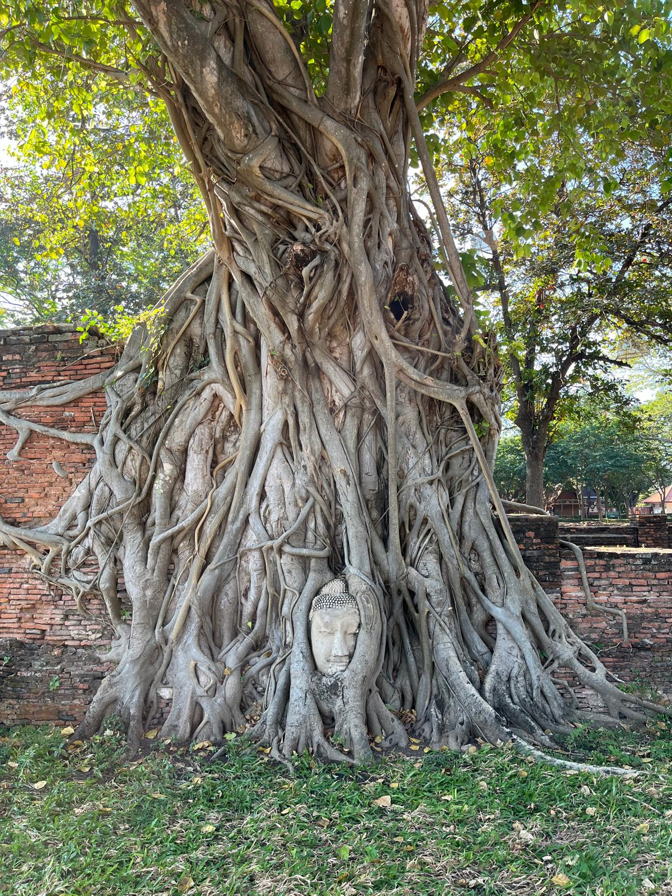

×

Ayutthaya'ya Hayran Kalın: Ayutthaya'da Görülmesi Gereken Yerler
Bir zamanların görkemli başkenti Ayutthaya, taşların arasında saklı hikayeleriyle sizi
zamanda
bir yolculuğa çıkarıyor.
Ayutthaya Seyahat Rehberi
Ayutthaya, Tayland’ın kalbinde, Bangkok’un yaklaşık 1,5 saat(80km) kuzeyinde yer alan büyüleyici bir antik şehir. Bir zamanlar Güneydoğu Asya’nın en güçlü krallıklarından biri olan Ayutthaya Krallığı’nın başkentiydi ve yüzyıllar boyunca ticaretin, kültürün ve mimarinin merkezi olarak gelişti. Bugün şehrin kalıntıları, dev Buda heykelleri ve zamana direnen tapınak kuleleriyle geçmişin görkemini hala inanılmaz hissettiriyor. UNESCO Dünya Mirası Listesi’ndeki bu tarihi şehir, hem tarih tutkunları hem de Tayland’ın ruhunu daha derinden keşfetmek isteyen gezginler için mutlaka görülmesi gereken bir yer.
Para Birimi ve Fiyatlar
Tayland’ın resmi para birimi Baht (THB)’dir ve çoğu yerde nakit veya kredi
kartıyla
ödeme yapılabilir.
Bankamatiklerden kendi bankanızın kartıyla para çekmek de mümkün; fakat çektiğiniz miktara
bağlı olarak komisyon oranları artabilir. Bu nedenle yüksek miktarlar yerine, ihtiyacınız kadarını
çekmek hem güvenli hem de daha ekonomik olacaktır.
2025 itibarıyla ortalama kurlar yaklaşık olarak:
1 Tayland Baht ≈ 1,29 TL (yaklaşık değer)
1 USD ≈ 33-36 THB civarındadır.
Koh Lanta, Tayland’ın diğer turistik bölgelerine göre daha uygun fiyatlı bir
adadır;
burada yemekler, konaklama ve günlük harcamalar genellikle daha ekonomiktir. Özellikle plaj
kenarındaki restoranlar ve küçük kafelerde, hem lezzetli hem de hesaplı seçenekler bulmak oldukça
kolaydır.
Ayutthaya'ya Ne Zaman Gidilir?
Ayutthaya’yı ziyaret etmek için en ideal dönem Kasım–Şubat ayları arasıdır; hava
serin ve gezmeye uygundur. Mart–Mayıs ayları oldukça sıcak geçer, bu yüzden sabah erken saatler veya
gün batımı en keyifli zamanlardır. Yağmur sezonu (Haziran–Ekim) ise daha sakin ve yeşil bir atmosfer
sunar.
Ayutthaya'da Yeme - İçme
Ayutthaya, sadece tapınaklarıyla değil, lezzetleriyle de keşfedilmeye değer bir
şehir. Şehrin en ünlü yemeği, bol karidesli ve tatlı-ekşi sosuyla yapılan Ayutthaya tarzı
pad thai ve nehir karidesidir. Özellikle Chao
Phraya Nehri kıyısındaki restoranlarda taze taze servis edilir. Yerel pazarlar ve sokak
tezgahlarında mango sticky rice, coconut ice cream ve Tayland’a
özgü soğuk içeceklerli deneyebilirsiniz. Akşam saatlerinde, nehir kıyısındaki restoranlarda gün
batımı ve tapınak manzarası eşliğinde yemek yemek, Ayutthaya’da günün en keyifli anlarından biridir.
Ayutthaya'ya Nasıl Gidilir ve Şehir İçi Ulaşım
Ayutthaya, Bangkok’un yaklaşık 80 km kuzeyinde yer alır ve ulaşım oldukça kolaydır.
Bangkok’tan trenle ortalama 1,5–2 saatte, otobüsle ise yaklaşık
1,5 saatte ulaşabilirsiniz. Şehre vardığınızda şehir içi ulaşım için en
keyifli seçenek bisiklet kiralamak olacaktır. Şehir tamamen dümdüz olduğu için
bisikletle gezmek hem kolay hem de eğlenceli. Bizim Tayland’daki iki aylık serüvenimizde, motor
kiralamaya ihtiyaç duymadığımız tek şehir burasıydı. Ve tabii ki, ülkenin ikonu haline gelmiş
tuk-tuklar da kısa mesafelerde dolaşmanın en pratik ve eğlenceli yollarından
biridir.
Ayutthaya'da Nerede Kalınır?
Ayutthaya’da konaklama seçenekleri her bütçeye uygun. Şehrin tapınaklarının yoğunlaştığı eski tapınak bölgesinde yer alan nehir kenarı otelleri ve butik pansiyonlar manzarasıyla öne çıkar. Daha uygun fiyatlı bir seçenek arıyorsanız, tren istasyonu çevresindeki hostel ve konukevleri hem ulaşımı kolay hem de gezilecek yerlere yakındır. Şehir dümdüz olduğu için her yere ulaşım çok kolaydır ve istediğiniz yerde, bütçenize uygun bir konaklama bulmanız aslında oldukça mümkün.
Seyahatinizi Planlayın(Kullanışlı Bağlantılar)
Seyahatlerimizi planlarken kullandığımız araçlara göz atın.
Burada yer alan bağlantılar bağlı kuruluş (affiliate) linkleridir.
Bu linkleri kullanarak blogumuzu sürdürmemize yardımcı oluyorsunuz.
Sizin için herhangi bir ek maliyet oluşturmaz, ancak bizim misyonumuzda büyük fark yaratabilir.
🌿
🏨Size en uygun oteli bulun. Rezervasyonlarınızı Booking.com üzerinden yapabilirsiniz.
✈️En uygun uçuş fiyatlarını Skyscanner.com adresinden bulabilirsiniz.
🎟️Çevrim içi tur ve etkinlik rezervasyonları için GetYourGuide.com kullanın.
🏕️Yürüyüş, kamp, bisiklet ve daha fazlası için Decathlon.com geniş bir yelpaze sunuyor.
Ayutthaya Gezi Haritası
Ayutthaya’da her taşın, her kalıntının bir hikâyesi var. Haritayı aç, tarihin izinde kendi yolunu keşfet.
1 Wat Chaiwatthanaram
2 Wat Mahatat
3 Wat Ratchaburana
4 Wat Phrasi-Sanpeth
5 Wat Yai-Chaimongkhon
6 Wat Pananchoeng
7 Japon Köyü
8 Portekiz Köyü
9 Sala Ayutthaya
Ayuttaya Tapınakları Genel Bilgi
Ayutthaya Tapınakları(Tayca:Wat), Tayland’ın eski başkenti Ayutthaya’da yer alan ve
ülkenin en önemli tarihi
miraslarından biri olan görkemli yapılardır. 1350 yılında kurulan Ayutthaya Krallığı döneminde inşa
edilen bu tapınaklar, şehrin Güneydoğu Asya’nın en güçlü merkezlerinden biri olduğu dönemin izlerini
taşır. Tapınaklar, Tay, Khmer (Kamboçya) ve Sri Lanka mimarisinin harmanlandığı
özgün bir tarza sahiptir;
yüksek prang kuleleri (Khmer tarzı kule), çan biçimli chediler ve Buda heykelleriyle büyüleyicidir.
Wat
Mahathat’taki ağaç kökleri arasına sıkışmış Buda başı, Ayutthaya’nın simgesi hâline
gelmiştir.
1767’de Burma(Myanmar) ordusu tarafından büyük ölçüde yıkılan şehir, günümüzde UNESCO Dünya
Mirası Listesi’nde yer almaktadır.

Ayutthaya’daki tapınaklara tek tek bilet (yaklaşık 100 Baht) alabileceğiniz gibi, altı büyük tapınağı kapsayan ve gün boyunca geçerli kombine bileti (yaklaşık 220 Baht) de tercih edebilirsiniz. Tapınakların çoğu her gün 08.00 – 18.00 saatleri arasında ziyarete açıktır; ancak bazı popüler tapınaklar (örneğin Wat Chaiwatthanaram) gün batımına kadar açık kalmakta ve özellikle akşam saatlerinde etkileyici bir manzara sunmaktadır.
×

Wat Chaiwatthanaram


Wat Chaiwatthanaram, Ayutthaya’da Chao Phraya Nehri’nin batı kıyısında yer alan ve şehrin en etkileyici tapınaklarından biridir. 17. yüzyılında Kral Prasat Thong tarafından annesinin anısına inşa edilen tapınak, Khmer mimarisinden esinlenmiş etkileyici bir yapıya sahiptir. Ortasında Meru Dağı’nı simgeleyen yüksek bir prang ve çevresinde sekiz küçük chedi bulunur.


Ayutthaya döneminde kraliyet törenlerinde kullanılan bu tapınak, 1767’deki Burma saldırısında büyük ölçüde yıkılmış, daha sonra restore edilerek günümüze ulaşmıştır.


Her gün 08.00–18.00 saatleri arasında ziyaret edilebilen Wat Chaiwatthanaram, özellikle gün batımında nehir üzerindeki manzarası ve akşam saatlerindeki ışıklandırılmış görüntüsü gerçekten büyüleyicidir. Bizden tavsiye: Tapınağı gün batımında gezin; hem en iyi ışığı yakalayabilir hem de kapanış saatine doğru daha az ziyaretçiyle daha sakin bir atmosferin tadını çıkarabilirsiniz. Hava karardığında ise tapınağın ışıklar altındaki eşsiz manzarasına hayran kalacağınızdan emin olabilirsiniz.
Wat Mahatat


Wat Mahathat, Ayutthaya’nın kalbinde yer alan ve şehrin en ünlü tapınaklarından biridir. 14. yüzyılın sonlarında inşa edilen bu tapınak, Ayutthaya Krallığı döneminde dini yaşamın merkezinde yer almış ve kutsal Buda kalıntılarına ev sahipliği yapmıştır. Khmer tarzı yüksek prangı zamanla yıkılmış olsa da, tapınağın kalıntıları hala kendine özgü bir ruh taşır. En çok, Banyan ağaç kökleri arasına sıkışmış Buda başı ile tanınır ve bu görüntü Ayutthaya’nın simgesi hâline gelmiştir. Her gün 08.00–18.00 saatleri arasında ziyarete açık olan Wat Mahathat, sabahın erken saatlerinde kalabalık olmadan gezmek için en uygun zamandır.
Wat Ratchaburana


Wat Ratchaburana, Ayutthaya’nın merkezinde yer alan ve tarihiyle olduğu kadar mimarisiyle de dikkat çeken 15. yüzyılın başlarında inşa edilmiş önemli bir tapınaktır. Wat Mahathat’ı ziyaret ettikten sonra kuzeye doğru kısa bir yürüyüş yapıldığında, bize göre Wat Mahathat’tan daha etkileyici bulduğumuz bu tapınakla karşılaşılır. Khmer mimari tarzında 1424 yılında inşa edilen Wat Ratchaburana’nın merkezinde, Meru Dağı’nı simgeleyen görkemli prang yer alır. Wat Mahathat’ın aksine bu ana kule hala sağlam durumdadır.


Ziyaretçiler, Chao Sam Phraya Ulusal Müzesi’nde sergilenen birçok kutsal emanetin bulunduğu mezar odasına, prang’ın içindeki dik merdivenlerden tırmanarak ulaşabilirler. Her gün 08.00–18.00 saatleri arasında ziyarete açık olan bu tapınak, bizce; hem tarihi önemi hem de estetik detaylarıyla Ayutthaya’daki en etkileyici yapılardan biridir.
Wat Phrasi-Sanpeth


Wat Phrasi-Sanpeth, Ayutthaya’da aklınızı başınızdan alacak bir diğer cazibe merkezidir. 15. yüzyılın ortalarında yalnızca Ayutthaya kralları tarafından kullanılan bir kraliyet tapınağı olarak inşa edilmiştir. Tapınak, kraliyet törenleri ve dini merasimler için tasarlanmıştır. Keşişler burada yaşamamıştır.

Ayutthaya’daki her tarihi tapınak biletinizde, bu Wat Phra Si Sanphet’teki üç çan biçimli chedi yer alır.


Gölgeliklerin çok az olduğu açık bir alan olması nedeniyle, tapınağı akşam, tercihen gün batımında ziyaret etmenizi öneririz. Tapınağın kapanmasından yaklaşık bir saat önce orada olduğunuzdan emin olun; çünkü kalabalık genellikle o saatte dağılır ve alan neredeyse tamamen size ait olur. Her gün 08.00–18.00 saatleri arasında gezilebilen tapınak, Ayutthaya’nın tarihi ve estetik açıdan en etkileyici yapılarından biridir.
Wat Yai-Chaimongkhon


Wat Yai-Chaimongkhon, Ayutthaya’da yer alan ve şehrin en etkileyici tapınaklarından biridir. 14. yüzyılın sonlarında inşa edilmiş eski bir tapınak olan Wat Yai-Chaimongkhon, tapınak arazisinde yaşayan keşişlerle birlikte hala faaliyet göstermektedir. Tapınak kompleksi, tüm bölgeye hakim olan ve güzel Ayutthaya tarzı mimarisiyle dikkat çeken devasa ana tapınaktan oluşur.


Tapınağın en dikkat çekici yapısı, büyük chedi ve çevresini saran sıra sıra oturur Buda heykelleridir. Büyük chedi, 1592’de kazanılan bir zaferi anmak için yapılmış ve adı da buradan gelir: “Chai Mongkhon†→ “Büyük Zaferâ€.
Wat Pananchoeng


Wat Pananchoeng, Ayutthaya’da Chao Phraya Nehri kenarında yer alan ve şehrin en eski
ve saygın
tapınaklarından biridir. 1324 yılında inşa edilen tapınak, Ayutthaya Krallığı’ndan önceki dönemlere
uzanan köklü bir tarihe sahiptir. Tapınağın en dikkat çekici özelliği, 19 metre yüksekliğinde ve
altın rengiyle öne çıkan büyük oturan Buda heykelidir.
Biz burayı ziyaret ettiğimizde çok sayıda ibadet eden vardı ve burasının Ayutthaya’daki en yoğun
ibadet edilen yerlerden biri olduğunu öğrendik. Bu yüzden burayı sabah saatlerinde keşfetmenin daha
faydalı
olacağını söyleyebiliriz.
Ayutthaya'daki Japon ve Portekiz Köyleri
Ayutthaya’daki Japon ve Portekiz Köyleri, şehrin çok kültürlü geçmişini yansıtan iki önemli tarihi yerleşimdir. Chao Phraya Nehri’nin iki yakasında yer alan bu köyler, 16. ve 17. yüzyıllarda Ayutthaya Krallığı döneminde yabancı tüccar ve misyonerlerin yaşadığı bölgelerdi.


Nehrin doğu kıyısındaki Japon Köyü (Ban Yipun), geçmişte Japon tüccarların ve
samurayların ticaret ve
diplomasi merkeziydi. Günümüzde burada Japanese Village Museum bulunuyor; müze,
Japonya ile Tayland
arasındaki tarihi ilişkileri ve kültürel etkileşimi anlatıyor.
Ayrıca Japon kültürünün Tay mutfağı üzerindeki etkisine dair ilginç bir hikaye de burada yer alıyor.
17. yüzyılda Ayutthaya’daki saray mutfağında görev yapan yarı Japon yarı Portekizli şef
Maria
Guyomar de Pinha , yani Thao Thong Kip Ma, Tayland’ın ünlü tatlıları Thong
Yip ve Thong Yot’un
yaratıcısı olarak biliniyor.
Müze alanında küçük ama çok huzurlu bir Japon bahçesi de bulunuyor. Nehir
kenarında, gölgelik
ağaçların altında yer alan bu bahçe, geleneksel Japon peyzaj düzenine göre tasarlanmış. Bu nedenle
müze ve sergi alanlarını gezdikten sonra kısa bir mola verip manzaranın tadını
çıkarabilirsiniz.
Ziyaret saatleri 08.00-16.00 saatleri arasındadır ve ücret kişi başı 50 Baht.


Portekiz Köyü (Ban Portugese), Chao Phraya Nehri’nin karşı kıyısında, Ayutthaya’nın
çok kültürlü
geçmişini yansıtan bir diğer tarihi yerleşimdir. Portekizliler, 16. yüzyılın başlarında Tayland’la
temas kuran ilk Batılı topluluk olarak Ayutthaya Krallığı ile güçlü diplomatik ve ticari ilişkiler
geliştirmiştir. Bu sayede, kendilerine ayrılan bölgede yaşamalarına ve inançlarını sürdürmelerine
izin verilmiştir.
Günümüzde bölgede ayakta kalan tek yapı San Petro (St. Peter) Kilisesi’dir.
Kilisenin çevresinde, o
dönemde burada gömülü rahiplere ait iskelet kalıntıları ve orijinal yapının temel izleri
bulunmaktadır.
Kiliseye giriş ücretsizdir.
Keşfet, Düşün, Büyülen: Ayutthaya
Tayland’ın eski başkenti Ayutthaya, zamana dokunmak isteyenler için gerçek bir açık
hava tarihi hazinesi. Yüzlerce yıllık tapınakları, mistik atmosferi ve krallık izleriyle burası,
Bangkok’tan trenle ya da günübirlik turla kolayca ulaşıp bambaşka bir döneme geçiş
yapabileceğiniz eşsiz bir istikamet.
Ayutthaya’da en güzeli tempoyu düşürmek: tapınakları gez, sokaklarında dolaş, tarihin
akışına kapıl. Akşam olduğunda ise mutlaka Sala Ayutthaya'da nehir ve tapınak
manzarası eşliğinde bir akşam yemeği deneyimle. Işıklar yandığında şehir bambaşka bir
ruha bürünüyor.
Özellikle yerel bir tat olan Roti Sai Mai’yi denemeyi unutma. Renkli pamuk şekerle
sarılmış ince krep… ilk lokmada şaşırtacak, emin olun!
Sizin Ayutthaya’da favori durağınız hangisiydi? Hadi yorumlara yazın. Yeni keşifler hep birlikte güzelleşiyor!
Yorum Yaz
E-posta adresiniz yayımlanmayacaktır. Gerekli alanlar * ile işaretlenmiştir.